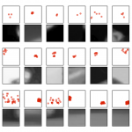
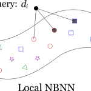
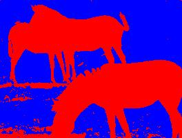
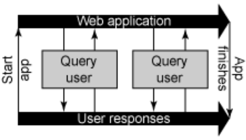

I completed my PhD at the University of British Columbia in April 2014, supervised by David Lowe. I’m now working as Head of Research and Development at Shelfie. My interests are scene understanding and object recognition, including machine learning and applications of convolutional neural networks.
Publications
Thesis
Sancho McCann. “Object classification and localization using spatially localized features”. PhD Dissertation. UBC Department of Computer Science. 2014.
Journal papers
David Meger, Per-Erik. Forssén, Kevin Lai, Scott Helmer, Sancho McCann, Tristram Southey, Matthew Baumann, James J. Little, and David G. Lowe. “Curious George: An Attentive Semantic Robot”. In Robotics and Autonomous Systems Journal, Volume 56, Number 6, pp. 503—511. June 2008. [pdf]
Conference papers
Sancho McCann and David G. Lowe. “Spatially Local Coding for Object Recognition.” ACCV, 2012. [pdf][poster][project page]
Sancho McCann and David G. Lowe. “Local Naive Bayes Nearest Neighbor for Image Classification.” CVPR, 2012. [pdf] [project page]
David Meger, Per-Erik Forssén, Kevin Lai, Scott Helmer, Sancho McCann, Tristram Southey, Matthew Baumann, James J. Little, David G. Lowe and Bruce Dow. “Curious George: An Attentive Semantic Robot.” IEEE/RSJ International Conference on Intelligent Robots and Systems, IROS 2007 Workshop: From sensors to human spatial concepts, November, 2007. [pdf]
Sancho McCann and Jacky Baltes. “Towards Automatic Image Modification as an Empirical Test of Image Segmentation.” In Proc. 9th International Conference on Control, Automation, Robotics and Vision (ICARCV), 2006. [pdf]
Sancho McCann and Jacky Baltes. “Abarenbou – A Small Vision-Based Humanoid Robotic Research platform.” In Proc. of the Third International Conference on Computational Intelligence, Robotics, and Autonomous Systems (CIRAS), 2005. [pdf]
Non-refereed contributions
Sancho McCann and David G. Lowe. “Local Naive Bayes Nearest Neighbor for Image Classification”, Technical Report TR-2011-11, Department of Computer Science, University of British Columbia, 2011. [@ UBC] [@ arXiv] [project page]
Sancho McCann and David G. Lowe. “Object Categorization Using Sparse Nearest Neighbor Distances for Improved Accuracy and Scalability”, 1st IEEE Workshop on Kernels and Distances for Computer Vision, 2011. [poster] [project page]
Scott Helmer, David Meger, Pooja Viswanathan, Sancho McCann, Matthew Dockrey, Pooyan Fazli, Tristram Southey, Marius Muja, Michael Joya, Jim J. Little, David G. Lowe, and Alan K. Mackworth. “Semantic Robot Vision Challenge: Current State and Future Directions,” IJCAI-09 Workshop on Competitions in Artificial Intelligence and Robotics, 2009. [pdf]
Scott Helmer, David Meger, Per-Erik Forssén, Sancho McCann, Tristram Southey, Matthew Baumann, Kevin Lai, Bruce Dow, James J. Little, and David G. Lowe. “Curious George: The UBC Semantic Robot Vision System.” AAAI Tech Report numbered IAAAI-WS-08-XX, October, 2007. [pdf]
Scott Helmer, David Meger, Per-Erik Forssén, Tristram Southey, Sancho McCann, Pooyan Fazli, James J. Little, and David G. Lowe. “The UBC Semantic Robot Vision System.” AAAI07: Mobile Robot Competition and Exhibition, Abstract. pp. 1983—1984. July, 2007. [pdf]
Paul Furgale, Sancho McCann, Jim Majewski, Andrew Bugera, and Kory Zelickson. “Team Manitoba 2006 AUVSI Student Competition Project Description.” Association for Unmanned Vehicle Systems International (AUVSI): 4th Annual Student Unmanned Aerial Vehicle Competition, Lexington Park, MD, 2006 [pdf]
Projects
Spatially local coding
 The spatial pyramid and its variants have been among the most popular and successful models for object recognition. In these models, local visual features are coded across elements of a visual vocabulary, and then these codes are pooled into histograms at several spatial granularities. We introduce spatially local coding, an alternative way to include spatial information in the image model. Instead of only coding visual appearance and leaving the spatial coherence to be represented by the pooling stage, we include location as part of the coding step. This is a more flexible spatial representation as compared to the fixed grids used in the spatial pyramid models and we can use a simple, whole-image region during the pooling stage. We demonstrate that combining features with multiple levels of spatial locality performs better than using just a single level. Our model performs better than all previous single-feature methods when tested on the Caltech 101 and 256 object recognition datasets.
{kind=link}
More details, code: [Project page]
Sancho McCann and David G. Lowe. “Spatially Local Coding for Object Recognition.” ACCV, 2012. [pdf][poster]
Local Naive Bayes Nearest Neighbor
 Local Naive Bayes Nearest Neighbor is an improvement to the NBNN image classification algorithm that increases classification accuracy and improves its ability to scale to large numbers of object classes. The key observation is that only the classes represented in the local neighborhood of a descriptor contribute significantly and reliably to their posterior probability estimates. Instead of maintaining a separate search structure for each class, we merge all of the reference data together into one search structure, allowing quick identification of a descriptor’s local neighborhood. We show an increase in classification accuracy when we ignore adjustments to the more distant classes and show that the run time grows with the log of the number of classes rather than linearly in the number of classes as did the original. This gives a 100 times speed-up over the original method on the Caltech 256 dataset. We also provide the first head-to-head comparison of NBNN against spatial pyramid methods using a common set of input features. We show that local NBNN outperforms all previous NBNN based methods and the original spatial pyramid model. However, we find that local NBNN, while competitive with, does not beat state-of-the-art spatial pyramid methods that use local soft assignment and max-pooling.
{kind=link}
More details, code: [Project page]
Sancho McCann and David G. Lowe. “Local Naive Bayes Nearest Neighbor for Image Classification.” CVPR, 2012. [pdf]
Sancho McCann and David G. Lowe. “Local Naive Bayes Nearest Neighbor for Image Classification”, Technical Report TR-2011-11, Department of Computer Science, University of British Columbia, 2011. [@ UBC] [@ arXiv]
Sancho McCann and David G. Lowe. “Object Categorization Using Sparse Nearest Neighbor Distances for Improved Accuracy and Scalability”, 1st IEEE Workshop on Kernels and Distances for Computer Vision, 2011. [poster]
Humanoid Robot
 I worked with Dr. Jacky Baltes on a small-size humanoid robot named Abarenbou. The vision system was very limited, using a camera detached from an early Sony Clié. All processing was done on the Sony Clié. We coded in C and cross compiled for the ARM processor. I developed a rule-based behaviour system for finding, approaching, and kicking the ball. The walking gait was manually tuned using custom built software. Abarenbou was our entry in the 2005 FIRA RoboWorld Cup.
I worked with Dr. Jacky Baltes on a small-size humanoid robot named Abarenbou. The vision system was very limited, using a camera detached from an early Sony Clié. All processing was done on the Sony Clié. We coded in C and cross compiled for the ARM processor. I developed a rule-based behaviour system for finding, approaching, and kicking the ball. The walking gait was manually tuned using custom built software. Abarenbou was our entry in the 2005 FIRA RoboWorld Cup.
Sancho McCann and Jacky Baltes. “Abarenbou – A Small Vision-Based Humanoid Robotic Research platform.” In Proc. of the Third International Conference on Computational Intelligence, Robotics, and Autonomous Systems (CIRAS), 2005. [pdf]
Robot Airplane
 During my last term at the University of Manitoba, a small group of us assembled to form the Unmanned Aerial Vehicle team. We prepared an entry to the Association for Unmanned Vehicle Systems International’s student competition. The goal was to have our airplane take-off, fly a search pattern, and land, all autonomously. While in the search area, a video feed was fed to an ground-based observing station, where an observer was to mark targets of interest and report their coordinates. Grading was based on accomplishing the mission autonomously, and the accuracy of our coordinates. We found good students, advisors, and sponsors. With a small budget, we needed to stay focused on the goal, and the simple engineering paid off. We placed 1st out of 17 teams in a field that included BYU, University of Texas, Cornell, MIT, and UCSD. I wrote much of the computer vision code, transforming the pixel coordinates to GPS coordinates, and giving that information to the observer in an easy to use interface.
During my last term at the University of Manitoba, a small group of us assembled to form the Unmanned Aerial Vehicle team. We prepared an entry to the Association for Unmanned Vehicle Systems International’s student competition. The goal was to have our airplane take-off, fly a search pattern, and land, all autonomously. While in the search area, a video feed was fed to an ground-based observing station, where an observer was to mark targets of interest and report their coordinates. Grading was based on accomplishing the mission autonomously, and the accuracy of our coordinates. We found good students, advisors, and sponsors. With a small budget, we needed to stay focused on the goal, and the simple engineering paid off. We placed 1st out of 17 teams in a field that included BYU, University of Texas, Cornell, MIT, and UCSD. I wrote much of the computer vision code, transforming the pixel coordinates to GPS coordinates, and giving that information to the observer in an easy to use interface.
Paul Furgale, Sancho McCann, Jim Majewski, Andrew Bugera, and Kory Zelickson. “Team Manitoba 2006 AUVSI Student Competition Project Description.” Association for Unmanned Vehicle Systems International (AUVSI): 4th Annual Student Unmanned Aerial Vehicle Competition, Lexington Park, MD, 2006 [pdf]
Image Segmentation
My undergraduate honours project used data-driven MCMC to explore the space of image segmentations. I investigated a novel application based on making automated changes to the image.
{kind=link}
Sancho McCann and Jacky Baltes. “Towards Automatic Image Modification as an Empirical Test of Image Segmentation.” In Proc. 9th International Conference on Control, Automation, Robotics and Vision (ICARCV), 2006. [pdf]
Inverse Reinforcement Learning
For my group project in UBC’s Machine Learning course taught by Nando de Freitas, we reviewed the problem of inverse reinforcement learning. We implemented Abbeel and Ng’s projection-based algorithm from Apprenticeship Learning via Inverse Reinforcement Learning, and Ramachandran’s algorithm from Bayesian Inverse Reinforcement Learning algorithm.
{kind=link}
Evgeny Maksakov, Sancho McCann, and Marcus Rohrbach. “Tacking Degeneracy in Inverse Reinforcement Learning: Evaluation and a Novel Combination.” Project report. [pdf]
Continuations in C++
I implemented a proof-of-concept web continuations library for C++. I stored the continuations server-side, with a flexible garbage collection strategy.
{kind=link}
Sancho McCann. “Web Continuations and a C++ Implementation.” Project report. [pdf]
AtmosView: Visualization Redesign
 I created AtmosView, a re-design of the visualization of atmospheric sounding data. Relationships between temperature, dewpoint, and the lifting of imaginary parcels of air are important to the determination of soaring conditions, atmospheric stability, and likelihood of severe weather. The current diagrams to display these relationships have been described as the most difficult atmospheric diagrams to read. The re-design applies well tested information visualization principles to expose data to the user previously hidden behind lines and frames. This not only improves extraction of data from individual charts, but allows for easier comparison between multiple charts. An informal evaluation of the re-design was encouraging and with some further work, a system designed around the AtmosView visualization should become usable for people with an amateur interest in these meteorological relationships.
I created AtmosView, a re-design of the visualization of atmospheric sounding data. Relationships between temperature, dewpoint, and the lifting of imaginary parcels of air are important to the determination of soaring conditions, atmospheric stability, and likelihood of severe weather. The current diagrams to display these relationships have been described as the most difficult atmospheric diagrams to read. The re-design applies well tested information visualization principles to expose data to the user previously hidden behind lines and frames. This not only improves extraction of data from individual charts, but allows for easier comparison between multiple charts. An informal evaluation of the re-design was encouraging and with some further work, a system designed around the AtmosView visualization should become usable for people with an amateur interest in these meteorological relationships.
Sancho McCann. “Atmospheric Sounding Visualization.” Project report. [pdf]
Resume
Education
B.C.Sc. (Hons.), University of Manitoba — 2000-05
M.Sc. student (transferred to Ph.D.), University of British Columbia — 2006-07
Ph.D., University of British Columbia — 2007-2014
Languages and Technologies
Python: 2.7, NumPy, SciPy, Matplotlib, Cython
C/C++: Boost, Google Test
Java: Android SDK
Google Protocol Buffers (Python and C++)
Amazon Web Services (EC2, Elastic MapReduce)
Google App Engine (Python)
Perforce, Subversion, Git
Past/occasional use: Matlab, PHP, MySQL
Employment
Research Assistant, University of Manitoba — 2005
I worked with Dr. Jacky Baltes in the Autonomous Agents Laboratory on a small, humanoid robot. I wrote vision algorithms and developed a stable walking gait for the robot.
Research and Development, Frantic Films — 2006
I did production work for Superman Returns and software development for their rendering pipeline.
Software Engineer Intern, Google — 2010, 2011
In 2010, I assisted in the development of a new Android application with the Geo/Street View team.
In 2011, I worked on improving the automatic organization of YouTube data.
Head of R&D, Shelfie – 2014 onward
Using computer vision to connect users and their books.
Other Activities
I have a Commercial Pilot Licence and a Class 1 Flight Instructor Rating. I got most of my flight experience as a flight instructor at Flying Colors Pilot Training and flew with their precision flight team. I’ve also delivered flight training to Canadian Forces pilots taking their Primary Flight Training and have held a Class 2 Aerobatic Flight Instructor rating. I won the John C. Webster Memorial Trophy. Today, I stay current flying recreationally around the lower mainland of British Columbia.
I was a member of the Canadian Forces in the Cadet Instructor Cadre. I helped administer the training of the Royal Canadian Air Cadets. My duties have included organizing training programs, supervision and development of instructors, administrative tasks, and many ad-hoc leadership roles. I’ve developed and taught an introductory level aviation course.
During my time at UBC, I held several volunteer roles in the Department of Computer Science at UBC. I led activities for TechTrek and GirlSmarts, two outreach programs the department organizes. I was a member of the department’s recruiting and admissions committee. I’ve mentored a junior TA and helped develop and deliver the TA training program. I was the president of the Computer Science Graduate Student Association. I was a councilor representing the computer science graduate students in UBC’s Graduate Student Society.
I have played competitive ultimate with UBC Ultimate, Refinery, and Blackfish. I train and compete at short distance sprints.